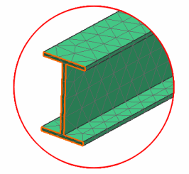
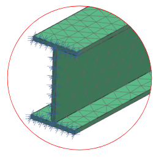

Fix the end of the beam
Apply a fixed constraint on one end of the beam to simulate a cantilevered condition. Using the Polygon Face type filter helps to select the desired object more easily.

 Fixed Constraint (Design Simulation toolbar,
Fixed Constraint (Design Simulation toolbar,  Constraint Type list)
Constraint Type list)
-
Type Filter
Polygon Face

Tip
The Type Filter
 is located on the Selection bar in the toolbar area.
is located on the Selection bar in the toolbar area.
-
 the face on one end of the part
the face on one end of the part

-
OK

The end of the beam is now constrained.